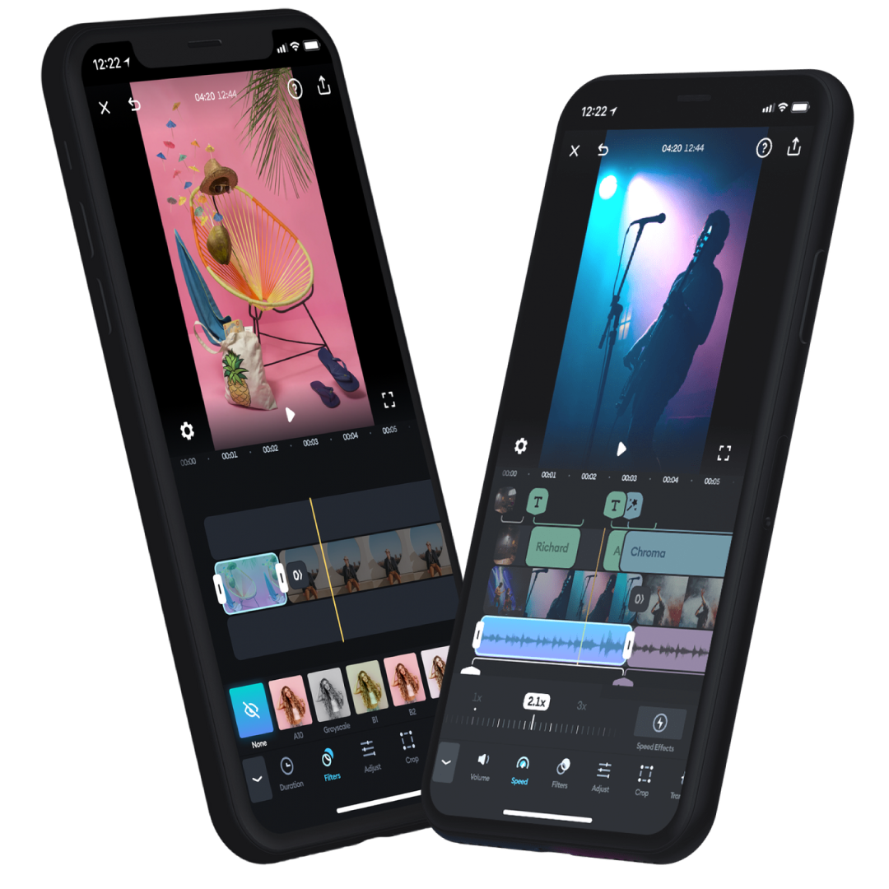

Jako pasja życiowa
Editing, czyli montaż, to proces opracowywania materiału wideo poprzez wybieranie, przycinanie i łączenie różnych ujęć w jedną spójną całość. Jego głównym celem jest stworzenie logicznej i zrozumiałej historii, która będzie interesująca dla widza. Na etapie editingu decyduje się o kolejności scen, tempie filmu, przejściach między ujęciami oraz o tym, które fragmenty materiału zostaną wykorzystane w finalnej wersji. Proces ten obejmuje nie tylko samo łączenie klipów, ale również dopasowywanie dźwięku, muzyki, efektów wizualnych czy kolorystyki obrazu. Dzięki temu możliwe jest nadanie materiałowi odpowiedniego klimatu, dynamiki oraz podkreślenie najważniejszych momentów.

Montażem wideo zajmuję się od ponad 6 lat. Przez ten czas rozwijałem swoje umiejętności, ucząc się nowych technik i poznając różne narzędzia wykorzystywane w editingu. Jest to zajęcie, które sprawia mi ogromną satysfakcję i pozwala mi stale rozwijać kreatywność. Zajmuję się tym przede wszystkim dla siebie – dla własnej przyjemności i możliwości eksperymentowania, bez presji czy oczekiwań zewnętrznych. Widzę, jak wiele udało mi się osiągnąć przez te lata i cieszę się każdym doświadczeniem, które pozwoliło mi rozwijać swoje umiejętności.
W tym wideo pokazuję, jak powstają moje edity – od surowego materiału aż po gotowy, spójny film. Zobaczysz krok po kroku, jak dobieram ujęcia, pracuję z muzyką, efektami i przejściami, aby stworzyć dynamiczną i ciekawą całość. To krótki przewodnik po moim procesie twórczym, idealny dla każdego, kto chce zobaczyć, jak powstają edity.